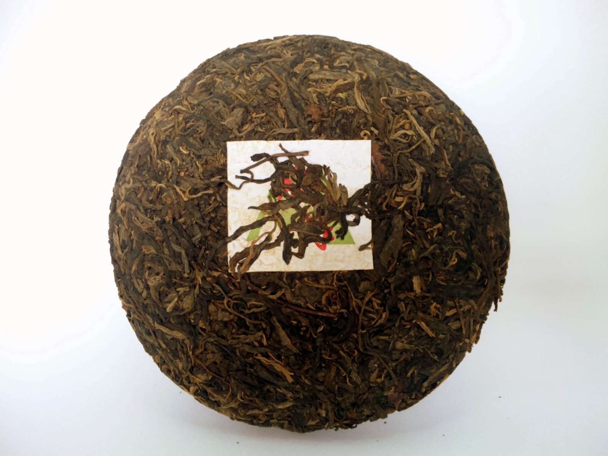
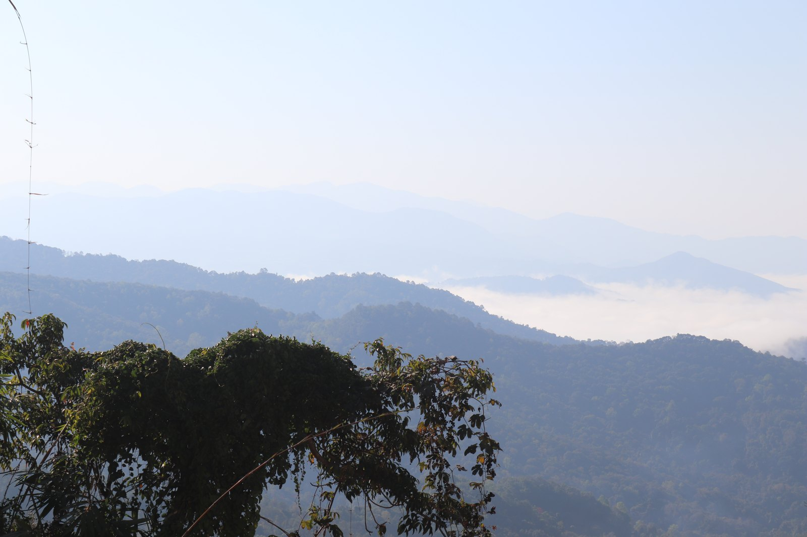
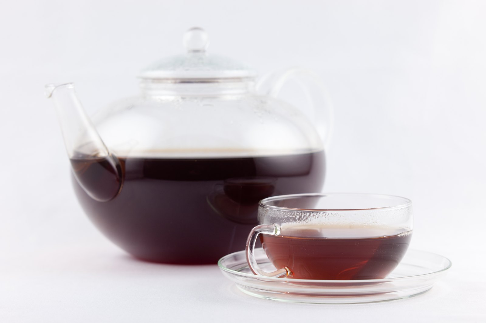
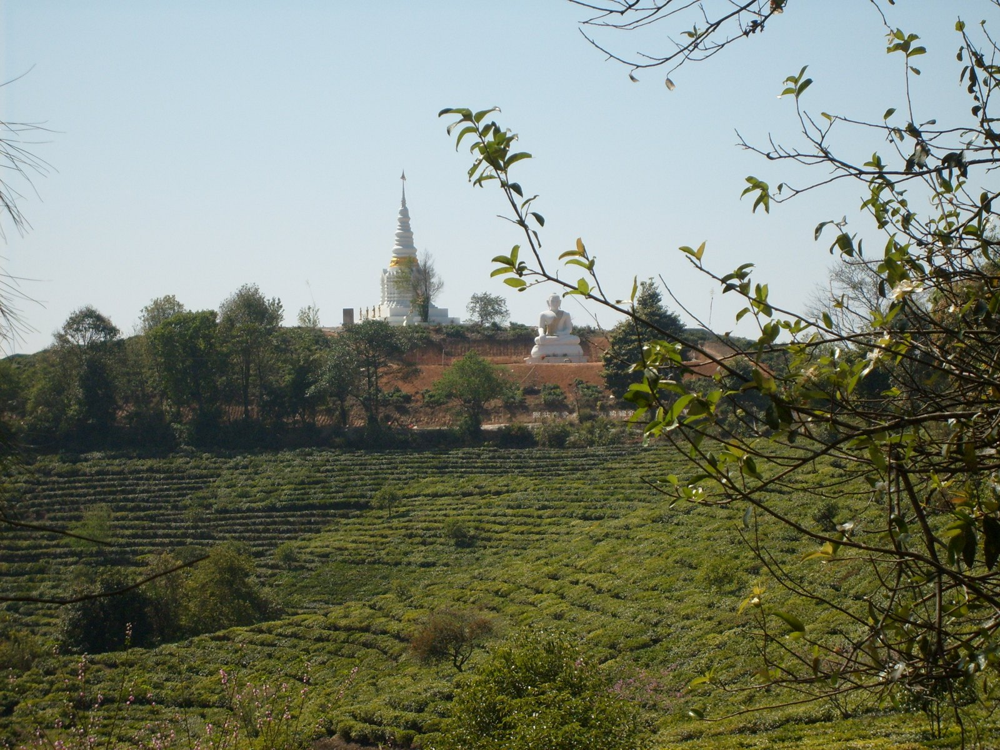
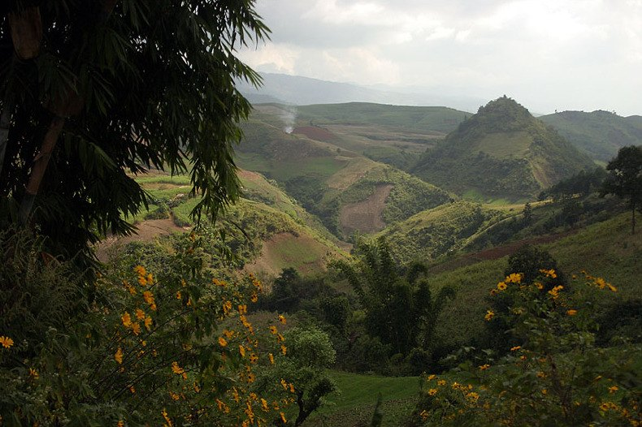

生生茶 · 清扬
SHENG PU’ER
- 制作工艺
- 鲜叶经杀青、揉捻、晒干后蒸压成型，不经过熟茶的渥堆工序。
- 常见汤色
- 新茶多为黄绿、金黄；陈放后可能逐渐加深。
- 品饮印象
- 清香、花香等表现较常见，滋味鲜明，苦涩与回甘因茶而异。

壹 / THE BEGINNING
普洱茶的故事，从云南的大叶种茶树说起。
以地理标志保护范围内的云南大叶种晒青茶为原料，在相应地域采用特定工艺制成，普洱茶因工艺与品质特征分为生茶和熟茶。看似相同的一片叶，会走向不同的滋味。
杀青、揉捻、日光干燥，让鲜叶成为晒青茶；蒸压让它凝成饼、砖、沱等形态。制茶的手艺，也连接着茶山生活与一代代人的日常。
贰 / TWO EXPRESSIONS
生与熟，是工艺的不同，也是两种品饮体验。
不必急着分高下，先找到自己喜欢的那一杯。

生SHENG PU’ER

熟SHOU PU’ER
茶饼形态不等于生熟类别，照片仅作形态与茶汤示意。实际风味取决于原料、工艺、年份、仓储与冲泡方式，不能只凭颜色判断品质。
叁 / ROOTED IN YUNNAN
循着澜沧江，认识三个代表产区。
山头是了解茶的线索，不是决定品质的唯一答案。

云南南端的茶乡，勐海与勐腊是认识普洱的重要起点。茶园、村寨与多样的地方制茶传统相伴而生。
勐海 · 勐腊 · 易武
在景迈山，茶林与村寨构成共同的文化景观。林下种茶的传统，让人们看见人与森林长久相处的智慧。
景迈山 · 宁洱 · 景谷

云南的重要茶叶原料产区。双江、凤庆等地的茶树资源与制茶生活，构成这片山地丰富的茶文化底色。
双江 · 凤庆 · 永德
肆 / THE ART OF BREWING
不必把泡茶想得太复杂。
从少量、快出汤开始，让每一泡更接近喜欢的滋味。
准备盖碗或茶壶、公道杯与茶杯，用热水温热茶具。新手可从约 100–120 毫升的盖碗入手，便于控制每一泡。
先试 5–7 克茶，轻轻拆散紧压茶。想喝淡一些可减少投茶量，不必一次追求浓酽。
新生茶可从 90–95℃ 尝试；熟茶与陈年生茶通常可用接近沸腾的水。嫩度、海拔与个人口味不同，可再调整。
前几泡可先试约 5–10 秒出汤，并尽量沥净；后续随滋味变淡逐步延长。生茶过苦可缩短时间，熟茶过浓可减少茶量。
以上为小盖碗的入门试泡参数，不是统一标准。玻璃壶照片仅示意茶汤；大壶冲泡需相应调整茶水比例与时间。
伍 / TIME & CARE
遵循产品标签上的贮存条件，保持环境清洁、干燥，避开阳光直射与厨房、香料等异味来源。定期检查，比盲目等待年份更重要。
不一定。原料与工艺是基础，适宜仓储是前提；陈放会改变香气与滋味，却不保证品质持续提升。不要只凭年份购买，也不必为“越陈越香”无限期存茶。
不会变成工艺意义上的熟茶。生茶陈化后颜色与滋味可能变化，但它没有经历熟茶的渥堆制作过程。老生茶与熟茶仍是不同的茶。
这些名称主要描述形态。茶饼、茶砖、沱茶属于紧压形态，散茶则较松散。形状本身不能说明生熟、年份或品质，选茶时应一起看原料、工艺与贮存信息。
不是。正常陈香不等于潮湿、刺鼻的霉味。如果茶叶有异常霉斑、霉味或明显受潮，应停止饮用；冲洗或高温冲泡不能把霉变茶恢复成好茶。
喜欢较鲜明的清香与回甘，可以从少量生茶开始；偏爱醇和口感，可以试熟茶。优先选来源清楚、小份量的茶，淡泡比较，比追求名山与高年份更容易找到自己的喜好。